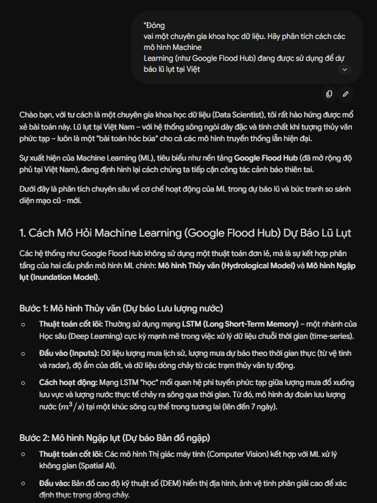
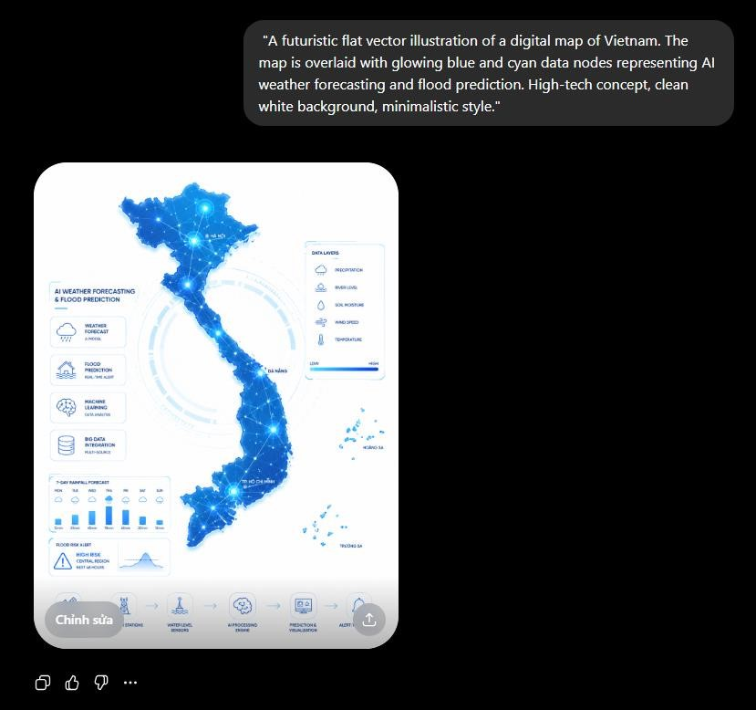

Tổng quan
Dự án sáng tạo nội dung xoay quanh chủ đề ứng dụng AI trong dự báo và cảnh báo lũ lụt tại Việt Nam. Thành phẩm là bài viết phân tích chuyên sâu kèm infographic tóm tắt.
Quy trình tích hợp AI
- Dùng Google Gemini để nghiên cứu tổng quan, so sánh mô hình ML như Google Flood Hub với dự báo thủy văn truyền thống.
- Dùng DALL-E 3 tạo minh họa bản đồ Việt Nam với các nút dữ liệu dự báo lũ, sau đó chỉnh lỗi chữ và hình dạng.
- Dùng Canva Magic Design để tìm bố cục infographic, giữ cấu trúc grid nhưng tự biên soạn nội dung, font và bảng màu.
So sánh công cụ
| Tiêu chí | Gemini | DALL-E 3 | Canva AI |
|---|---|---|---|
| Thế mạnh | Tổng hợp thông tin phức tạp. | Tạo hình ảnh công nghệ nhanh. | Gợi ý bố cục trực quan. |
| Điểm yếu | Văn phong đôi khi rập khuôn, có nguy cơ hallucination. | Sai chi tiết địa lý và chữ trên ảnh. | Dễ tạo sản phẩm trùng lặp. |
| Ứng dụng | Research và outlining. | Concept art, minh họa. | Wireframe infographic. |


Bài học
Tỉ lệ đóng góp cá nhân được xác định khoảng 70%: kiểm chứng thông tin, biên soạn lại văn bản, chỉnh hình ảnh và tổ chức mạch trình bày. AI giúp khởi tạo nhanh, nhưng chất lượng cuối cùng đến từ việc chọn lọc và chịu trách nhiệm.
Thông điệp: trong lĩnh vực nhạy cảm như thiên tai, sản phẩm AI cần minh bạch nguồn gốc và được chuyên gia/con người kiểm định.